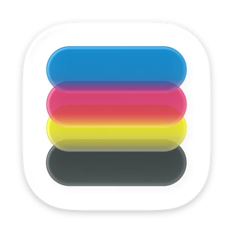
SpektraLab不模仿胶片的结果，模拟胶片的过程。
一款 macOS 上的物理胶片模拟与数字暗房应用。打开一张 RAW，选好胶片和相纸，约一秒得到一张按物理过程建模的照片。我一个人完成了市场调研、产品定义、界面与品牌、引擎移植、打包分发和冷启动，并根据用户反馈持续迭代。
- 角色
- 独立完成
- 周期
- 2026.08 – 今
- 平台
- macOS 15 及以上，Apple 芯片；iPhone 版在 TestFlight 公测
- 技术
- SwiftUI · Metal · C++20
- 许可
- GPL-3.0-or-later
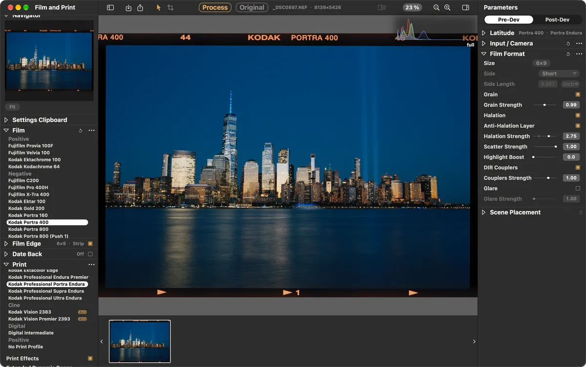
- 4500 万像素出图。参考实现约 30 s
- 1.13s
- 1 亿像素峰值内存。首个版本为 27.4 GB
- 13.7GB
- 导出文件与屏幕软打样的差异
- 0px
- 与参考实现的最大误差
- 1.1 × 10−5
- GitHub，截至 2026.10.14
- 190Stars
- 首发后 21 天内发布
- 15个版本
01缺口Gap
能用的不真实，真实的不能用。
| 比较项 | RGB LUT 滤镜 | 物理模型 spektrafilm | SpektraLab |
|---|---|---|---|
| 怎么算 | 输入三个数，查表，输出三个数 | 81 个光谱波段，21 个节点，实测的胶片与相纸数据 | 同一个物理模型，原生移植到 C++ 与 Metal |
| 得到什么 | 快，容易上手，能长得像 | 换一卷胶片、多给一档曝光，颜色的变化有物理依据 | 物理真实，并且能实时拖动滑杆 |
| 代价 | 回答不了「颜色为什么这样变」 | 只有 Python 命令行；4500 万像素一张约 30 秒 | Mac 版只支持 Apple 芯片；iPhone 版仍在公测 |
摄影师不需要懂光谱，只需要懂暗房。产品要做的，是把正确的物理放在熟悉的操作后面。
02定位Positioning
数字暗房，不是图库。
做
- 按暗房流程组织：进片、胶片曝光、显影、印相、呈现
- 任何参数改动都能实时看到
- 导出的成片，等于屏幕上确认过的样子
不做
- 图库与素材管理
- 复刻化学操作台
- 一键滤镜、玻璃拟态、触屏尺寸的控件
参照：Capture One 的专业工作流与工具栏；Dehancer 连续的胶片模块。
03过程Process
一张照片，走完 21 个节点。
场景的光先被还原成光谱，再依次经过胶片的感光、显影、成色剂耦合与颗粒，由放大机印到相纸上，最后在标准光源下被「看」出来。每一步都是一个有物理意义的方程，界面上的每个控件都对应其中一步。
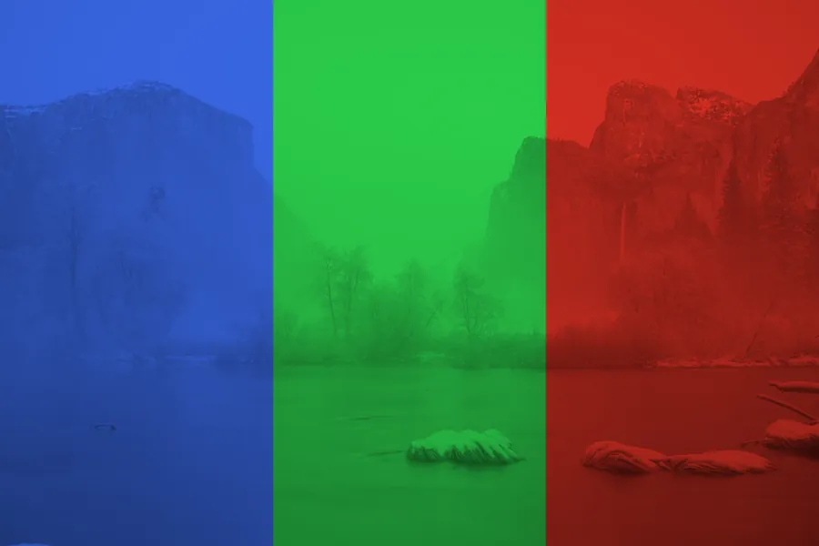
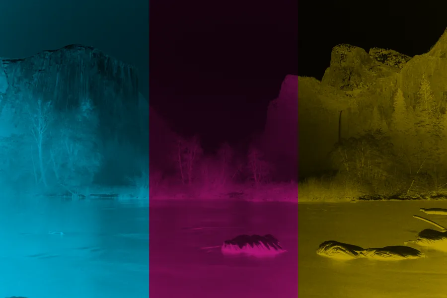
81 个波段上的 Kodak Portra 400
引擎里的实测光谱感光度：感蓝、感绿、感红三层乳剂，各自对哪一段光敏感。380 至 780 nm，每 5 nm 一个波段。
感蓝层感绿层感红层
- 预处理 · 3
- input_cast → auto_exposure → crop_rescale
- 胶片 · 8
- upsample → exposure → boost → halation → log → curves → dir_couplers → grain
- 印相 · 3
- enlarger_spectral → print_exposure → print_curves
- 观看 · 7
- scan_spectral → bw_correction → glare → xyz_to_rgb → gamut_compress → unsharp → cctf
04引擎Engine
先定验收，再写实现。
8 月 24 日的第一批提交不是功能，而是一套 1600 万像素的基线、一个视觉等价测试框架和 RFC-001。之后 21 个节点从 Python 逐个移植到 C++ 与 Metal，每个节点都与参考实现对拍。性能和内存不是感觉，是写进基线的数字。
取舍：对齐参考实现，还是对用户正确？
引擎移植 · 已知差异
- 现象
- 参考实现在构建计算图时，把「镜头模糊」当成无效节点剪掉了。用户拖这个滑杆，什么都不会发生。
- 约束
- 移植版必须能和参考实现逐节点对拍，任何差异都要能解释。
- 洞察
- 对拍是为了守住物理，不是为了复制缺陷。「一致」不等于「正确」。
- 方案
- 每次运行时按实际像素尺寸计算模糊半径，让参数真正生效。
- 验证
- 对拍测试把这里登记为「已知差异」，而不是把它「修」成一致。
- 结果
- 界面上的每个滑杆都真的做了点什么。差异有记录，可追溯。
05界面与身份Interface, identity
控件在哪一侧，说明移动它的代价。
左栏回答「照片如何形成」：胶片、画幅、相纸，改这里等于重新显影一次。右栏回答「成片长什么样」：白平衡、曲线、色彩平衡，改这里只是重新绘制。信息架构本身就在告诉用户，每一次调整要付出多少。
三种「变亮」，三个位置
胶片曝光、印相曝光、后期调色，物理上是三件事。所以名字不同，位置不同，重算的代价也不同。
一个「120」，四种画幅
由画幅类型、对齐边与照片比例，推导出 645、6×6、6×7、6×9。用户不必选四次。
裁切不重算颗粒，默认关
这也是物理上正确的答案：裁切一张底片，颗粒不会变细。
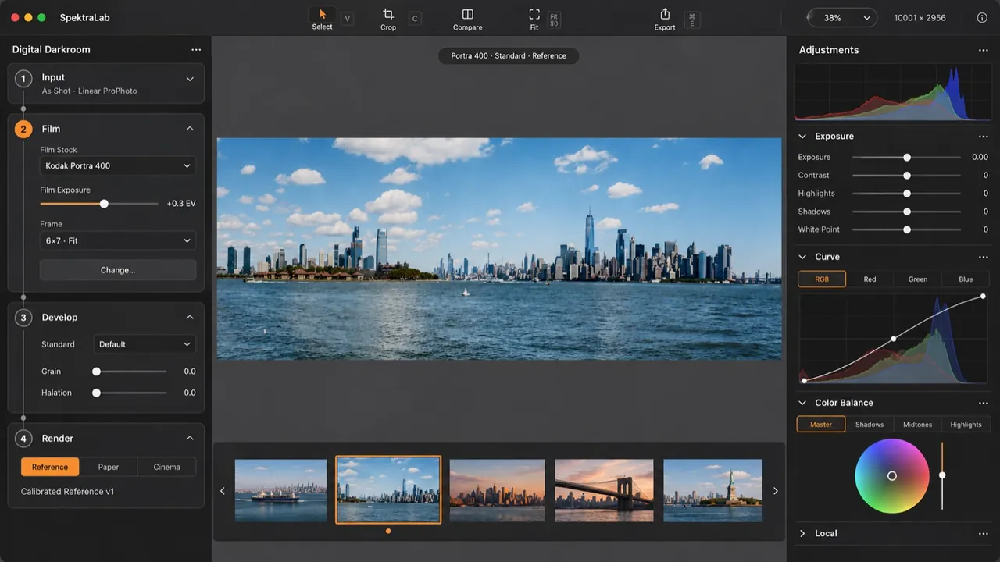
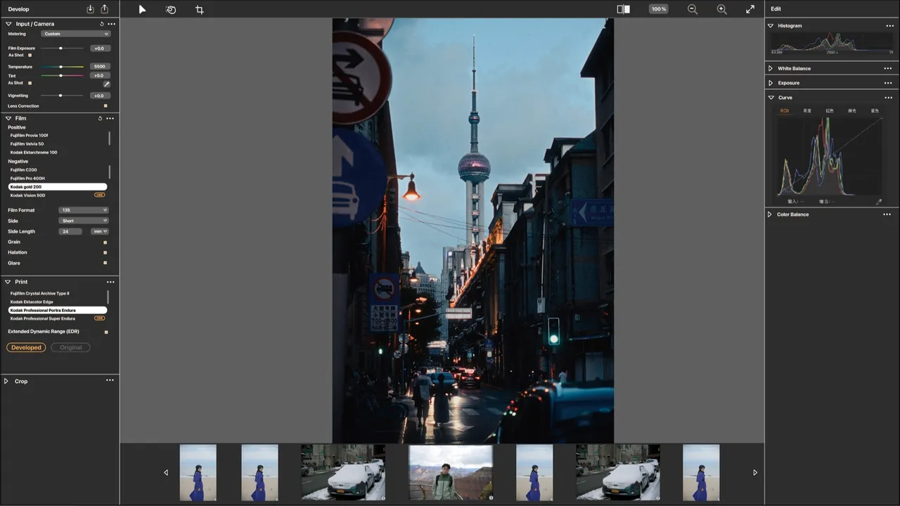
06发布Launch
一级一级建立信任。
冷启动的内容不是「滤镜好看」，而是把过程本身当卖点。每一篇只证明一件事，从审美上的共鸣，一步步走到专业上的可信。渠道是小红书、知乎、GitHub 与官网 spektralab.app；Mac 安装包放在 GitHub Release 和国内网盘，iPhone 版通过 TestFlight 公测。
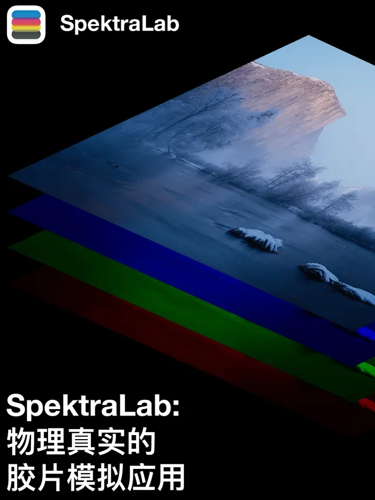
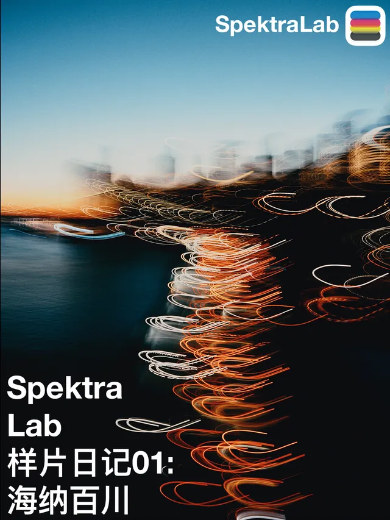
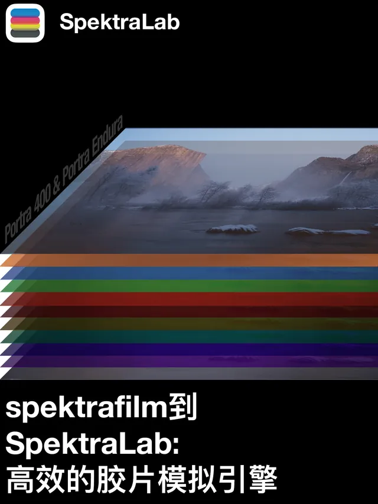
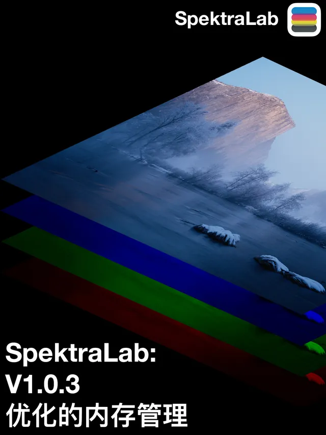
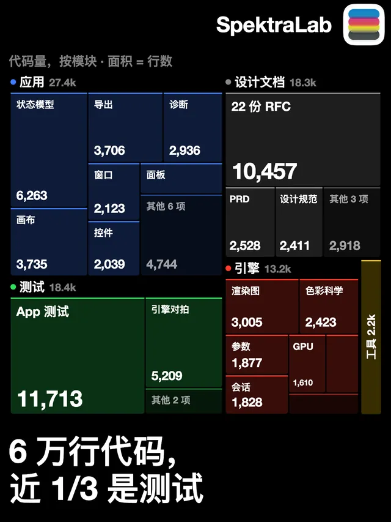
- 小红书首发周末的互动数
- 1,000+
- GitHub，另有 11 个 Fork。截至 2026.10.14
- 190Stars
- GitHub Release 的累计下载，加上 iPhone 版 TestFlight 的 200 位测试者；不含国内网盘。截至 2026.10.14
- 992次下载
发版节奏：21 天，15 个版本
每个圆点是一次公开发布，按北京时间的日期堆叠。标出的是每个新版本线的第一天。
以表格查看全部 15 次发布
| 版本 | 发布时间（北京时间） | 备注 |
|---|---|---|
| v0.3.1 | 2026.09.19 01:17 | 首个公开版本 |
| v1.0.1 | 2026.09.20 18:22 | |
| v1.0.2 | 2026.09.20 20:08 | |
| v1.0.3 | 2026.09.20 23:18 | 内存管理，1 亿像素峰值减半 |
| v1.0.4 | 2026.09.21 20:06 | 更新检查 |
| v1.0.5 | 2026.09.22 10:45 | 快捷键与界面缩放 |
| v1.1.0 | 2026.09.26 16:43 | 新界面，场景宽容度与反差遮罩 |
| v1.1.1 | 2026.09.26 17:42 | 命令行与 MCP 服务器 |
| v1.2.0 | 2026.09.29 11:34 | 数字中间片导出，设置剪贴板 |
| v1.2.1 | 2026.09.29 13:29 | |
| v1.2.2 | 2026.09.30 01:51 | |
| v1.3.0 | 2026.10.04 19:05 | 片边、全景画幅与半格拼接 |
| v1.3.1 | 2026.10.05 01:03 | |
| v1.3.2 | 2026.10.06 16:35 | |
| v1.3.3 | 2026.10.09 19:46 | 黑白胶片；首个经 Developer ID 签名、Apple 公证的版本 |
07迭代Iteration
反馈不直接变成功能，先变成一个约束问题。
| 收到的信号 | 来源 | 处理 | 记录 |
|---|---|---|---|
| 1 亿像素的 RAW 占满 24 GB 内存 | 已发布版本的用户报告 | 修掉缓冲池的问题，并砍掉原定的后续方案 | RFC-020 |
| 「JPG 进去，效果比 RAW 好」 | 用户原话 | 不改实测数据，拆成两个暗房里真实存在的操作 | RFC-023、024 |
| 一天发了三个版本，用户不知道自己是不是最新 | 发版节奏 | 一个按钮，一次请求，一个外链。不做自动更新，不做遥测 | RFC-021 |
案例 A：一亿像素，24 GB 内存
RFC-020
- 现象
- 用户报告：哈苏 X2D 的 16-bit RAW（101.9 MP）在 24 GB 内存的 Mac 上占到 23 GB。
- 约束
- 用户机器的内存是硬上限；画质零损失是硬门槛。新方案的输出必须与原来逐位一致，否则不发。
- 洞察
- 大头不在渲染本身。缓冲池在持有 13.1 GB 已经没用的缓冲时，还在继续申请新的。
- 方案与验证
- 修复后峰值从 28.9 GB 降到 19.1 GB，输出逐位一致；打包版实测，1 亿像素峰值 13.7 GB。
- 反转
- 原计划的条带渲染，在这些优化之后实测反而更差：9,914 MB 对 9,571 MB。我砍掉了已经规划好的下一篇 RFC。
- 结果
- 1 亿像素的中画幅用户可以在 24 GB 的 Mac 上工作。他们正是最专业的那一批人。
案例 B：「JPG 进去，比 RAW 好看」
RFC-023 · RFC-024
- 现象
- 用户原话：「jpg 进去效果比 raw 好，因为曝光的原因」。
- 约束
- 不能改实测的胶片与相纸数据。那是「物理真实」的根基。
- 洞察
- 这不是 bug，而是对产品主张的一次测量。相机 JPEG 在机内已被压到 5 至 8 档，接近相纸的宽容度；RAW 带着 12 至 15 档，直接进了胶片模型。
- 方案
- 拆成两个暗房里真实存在的操作：曝光时控制光比，印相时做反差遮罩。两者互不偷偷开启对方。
- 验证
- 在真实 RAW 上跑完设计。三处假设没有通过测量，已在文档里原地更正。
- 结果
- 用户的困惑变成暗房语言里的两个工具，而不是一个「自动修复」滑杆。
08工作方式Method
人保留判断，Agent 负责执行。
我保留
- 需求与范围：什么做，什么不做
- 架构取舍与性能预算
- 验收：什么才算「好了」
用来约束 Agent 的
- RFC 与 PRD，固定产品定义与技术路径
- 参考实现对拍、回归、延迟与内存基线
- 真实窗口截图验收：测试全绿，不等于用户看到的是对的
- 篇 RFC
- 30
- 个测试用例
- 560
- 次提交，自 2026.08.24 起
- 400+
- 代码，其中近三成是测试。2026.10.09 统计
- 8.7万行
09样片Samples
照片是主角。
以下照片由我拍摄，全部用 SpektraLab 显影。图注格式在所有物料里保持一致：地点、胶片、相纸。
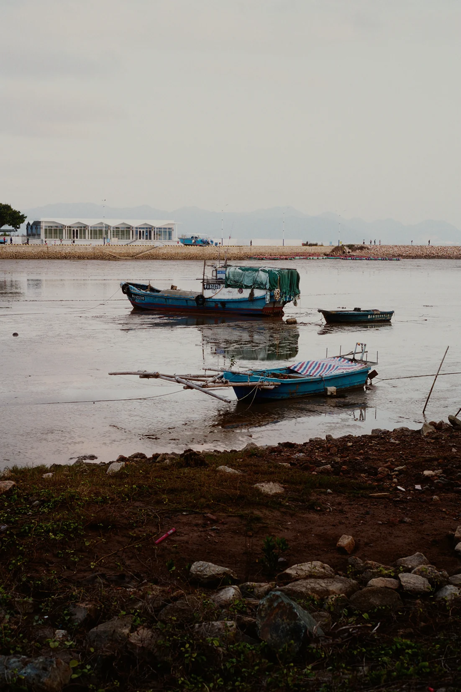
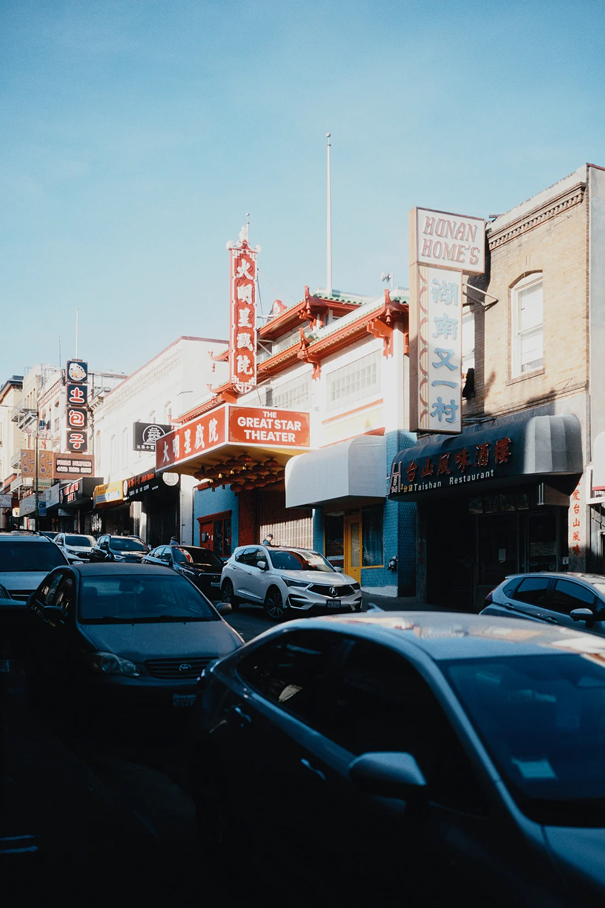
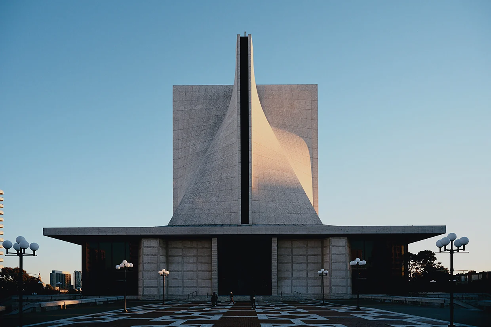
10致谢与下一步Credits, next
胶片过程模型、28 款实测的胶片与相纸配置，以及放大机 LUT，来自 Andrea Volpato 的开源项目 spektrafilm（GPLv3；配置数据为 CC BY-SA 4.0）；4 款黑白胶片的配置由我建立。SpektraLab 是这个引擎的原生 C++ 与 Metal 移植，以及围绕它构建的应用。产品定义、界面、移植、品牌与发布由我完成。
命令行与 MCP 服务器已随 v1.1.1 发布，Agent 用和窗口同一套代码修图。接下来：iPhone 版正在 TestFlight 公测；Windows 开发版已经进入仓库，使用 C++ 与 Vulkan 后端。